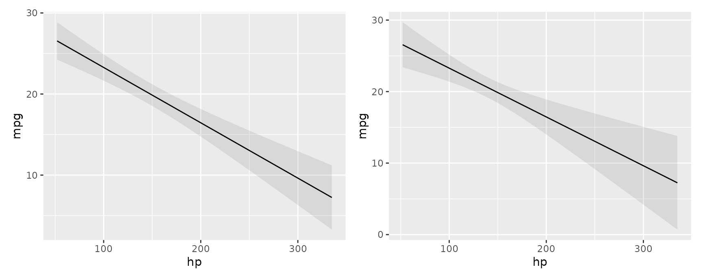
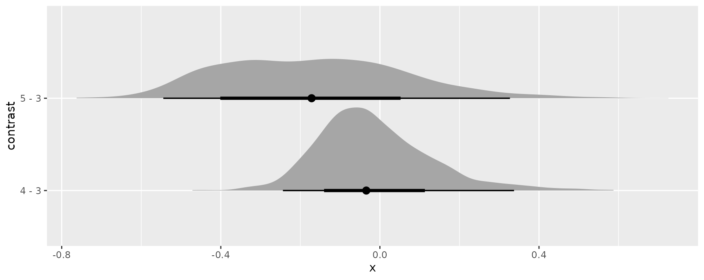
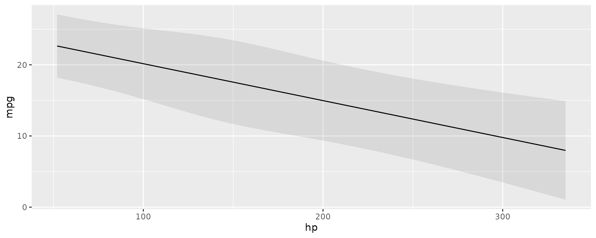

Delta Method
All the standard errors generated by the slopes(),
comparisons(), and hypotheses() functions of
this package package are estimated using the delta method. Mathematical
treatments of this method can be found in most statistics textbooks and on Wikipedia.
Roughly speaking, the delta method allows us to approximate the
distribution of a smooth function of an asymptotically normal
estimator.
Concretely, this allows us to generate standard errors around
functions of a model’s coefficient estimates. Predictions, contrasts,
marginal effects, and marginal means are functions of the coefficients,
so we can use the delta method to estimate standard errors around all of
those quantities. Since there are a lot of mathematical treatments
available elsewhere, this vignette focuses on the “implementation” in
marginaleffects.
Consider the case of the marginal_means() function. When
a user calls this function, they obtain a vector of marginal means. To
estimate standard errors around this vector:
- Take the numerical derivative of the marginal means vector with
respect to the first coefficient in the model:
- Compute marginal means with the original model: \(f(\beta)\)
- Increment the first (and only the first) coefficient held inside the model object by a small amount, and compute marginal means again: \(f(\beta+\varepsilon)\)
- Calculate: \(\frac{f(\beta+\varepsilon) - f(\beta)}{\varepsilon}\)
- Repeat step 1 for every coefficient in the model to construct a \(J\) matrix.
- Extract the variance-covariance matrix of the coefficient estimates: \(V\)
- Standard errors are the square root of the diagonal of \(JVJ'\)
Scroll down this page to the Numerical Derivatives section to see a detailed explanation, along with code for manual computation.
Standard errors and intervals for slopes() and
comparisons()
All standard errors for the slopes() and
comparisons() functions are computed using the delta
method, as described above.
Standard errors and intervals for marginal_means() and
predictions()
The marginal_means() and predictions()
function can compute the confidence intervals in two ways. If the
following conditions hold:
- The user sets:
type = "response" - The model class is
glm - The
transformargument isNULL
then marginal_means() and predictions()
will first compute estimates on the link scale, and then back transform
them using the inverse link function supplied by
insight::link_inverse(model) function.
In all other cases, standard errors are computed using the delta method as described above.
Robust standard errors
All the functions in the marginaleffects package can
compute robust standard errors on the fly for any model type supported
by the
sandwich package. The vcov argument
supports string shortcuts like "HC3", a one-sided formula
to request clustered standard errors, variance-covariance matrices, or
functions which return such matrices. Here are a few examples.
Adjusted predictions with classical or heteroskedasticity-robust standard errors:
library(marginaleffects)
library(patchwork)
mod <- lm(mpg ~ hp, data = mtcars)
p <- predictions(mod)
head(p, 2)
#>
#> Estimate Std. Error z Pr(>|z|) 2.5 % 97.5 %
#> 22.6 0.777 29.1 <0.001 21.1 24.1
#> 22.6 0.777 29.1 <0.001 21.1 24.1
#>
#> Columns: rowid, estimate, std.error, statistic, p.value, conf.low, conf.high, mpg, hp
p <- predictions(mod, vcov = "HC3")
head(p, 2)
#>
#> Estimate Std. Error z Pr(>|z|) 2.5 % 97.5 %
#> 22.6 0.863 26.2 <0.001 20.9 24.3
#> 22.6 0.863 26.2 <0.001 20.9 24.3
#>
#> Columns: rowid, estimate, std.error, statistic, p.value, conf.low, conf.high, mpg, hpMarginal effects with cluster-robust standard errors:
avg_slopes(mod, vcov = ~cyl)
#>
#> Term Estimate Std. Error z Pr(>|z|) 2.5 % 97.5 %
#> hp -0.0682 0.0187 -3.65 <0.001 -0.105 -0.0316
#>
#> Columns: term, estimate, std.error, statistic, p.value, conf.low, conf.highComparing adjusted predictions with classical and robust standard errors:
p1 <- plot_predictions(mod, condition = "hp")
p2 <- plot_predictions(mod, condition = "hp", vcov = "HC3")
p1 + p2
Simulation-based inference
marginaleffects offers an experimental
inferences function to conduct simulation-based inference
following the strategy proposed by Krinsky & Robb (1986):
- Draw
itersets of simulated coefficients from a multivariate normal distribution with mean equal to the original model’s estimated coefficients and variance equal to the model’s variance-covariance matrix (classical, “HC3”, or other). - Use the
itersets of coefficients to computeitersets of estimands: predictions, comparisons, or slopes. - Take quantiles of the resulting distribution of estimands to obtain a confidence interval and the standard deviation of simulated estimates to estimate the standard error.
Here are a few examples:
library(marginaleffects)
library(ggplot2)
library(ggdist)
mod <- glm(vs ~ hp * wt + factor(gear), data = mtcars, family = binomial)
mod |> predictions() |> inferences(method = "simulation")
#>
#> Estimate Std. Error 2.5 % 97.5 %
#> 7.84e-01 0.195 2.52e-01 0.971
#> 7.84e-01 0.162 3.37e-01 0.956
#> 8.98e-01 0.141 4.53e-01 0.988
#> 8.74e-01 0.230 1.59e-01 0.995
#> 1.31e-02 0.189 5.80e-05 0.776
#> --- 22 rows omitted. See ?avg_predictions and ?print.marginaleffects ---
#> 3.83e-01 0.291 1.67e-02 0.956
#> 1.21e-06 0.135 1.89e-12 0.538
#> 6.89e-03 0.143 3.24e-05 0.571
#> 8.07e-11 0.165 2.22e-16 0.889
#> 7.95e-01 0.166 3.41e-01 0.962
#> Columns: rowid, estimate, std.error, conf.low, conf.high, vs, hp, wt, gear
mod |> avg_slopes(vcov = ~gear) |> inferences(method = "simulation")
#>
#> Term Contrast Estimate Std. Error 2.5 % 97.5 %
#> gear 4 - 3 -0.04019 0.05594 -0.0939 0.1245
#> gear 5 - 3 -0.19877 0.27518 -0.4874 0.3335
#> hp dY/dX -0.00473 0.00451 -0.0116 0.0046
#> wt dY/dX 0.00696 0.32085 -0.6104 0.7065
#>
#> Columns: term, contrast, estimate, std.error, conf.low, conf.highSince simulation based inference generates iter
estimates of the quantities of interest, we can treat them similarly to
draws from the posterior distribution in bayesian models. For example,
we can extract draws using the posterior_draws() function,
and plot their distributions using packages likeggplot2 and
ggdist:
mod |>
avg_comparisons(variables = "gear") |>
inferences(method = "simulation") |>
posterior_draws("rvar") |>
ggplot(aes(y = contrast, xdist = rvar)) +
stat_slabinterval()
Bootstrap
It is easy to use the bootstrap as an alternative strategy to compute
standard errors and confidence intervals. Several R
packages can help us achieve this, including the long-established
boot package:
library(boot)
set.seed(123)
bootfun <- function(data, indices, ...) {
d <- data[indices, ]
mod <- lm(mpg ~ am + hp + factor(cyl), data = d)
cmp <- comparisons(mod, newdata = d, vcov = FALSE, variables = "am")
tidy(cmp)$estimate
}
b <- boot(data = mtcars, statistic = bootfun, R = 1000)
b
#>
#> ORDINARY NONPARAMETRIC BOOTSTRAP
#>
#>
#> Call:
#> boot(data = mtcars, statistic = bootfun, R = 1000)
#>
#>
#> Bootstrap Statistics :
#> original bias std. error
#> t1* 4.157856 0.01543426 1.003461
boot.ci(b, type = "perc")
#> BOOTSTRAP CONFIDENCE INTERVAL CALCULATIONS
#> Based on 1000 bootstrap replicates
#>
#> CALL :
#> boot.ci(boot.out = b, type = "perc")
#>
#> Intervals :
#> Level Percentile
#> 95% ( 2.240, 6.277 )
#> Calculations and Intervals on Original ScaleNote that, in the code above, we set vcov=FALSE to avoid
computation of delta method standard errors and speed things up.
Compare to the delta method standard errors:
mod <- lm(mpg ~ am + hp + factor(cyl), data = mtcars)
avg_comparisons(mod, variables = "am")
#>
#> Term Contrast Estimate Std. Error z Pr(>|z|) 2.5 % 97.5 %
#> am 1 - 0 4.16 1.26 3.31 <0.001 1.7 6.62
#>
#> Columns: term, contrast, estimate, std.error, statistic, p.value, conf.low, conf.highMixed effects models: Satterthwaite and Kenward-Roger corrections
For linear mixed effects models we can apply the Satterthwaite and Kenward-Roger corrections in the same way as above:
library(marginaleffects)
library(patchwork)
library(lme4)
dat <- mtcars
dat$cyl <- factor(dat$cyl)
dat$am <- as.logical(dat$am)
mod <- lmer(mpg ~ hp + am + (1 | cyl), data = dat)Marginal effects at the mean with classical standard errors and z-statistic:
slopes(mod, newdata = "mean")
#>
#> Term Contrast Estimate Std. Error z Pr(>|z|) 2.5 % 97.5 %
#> hp dY/dX -0.0518 0.0115 -4.52 <0.001 -0.0743 -0.0294
#> am TRUE - FALSE 4.6661 1.1343 4.11 <0.001 2.4430 6.8892
#>
#> Columns: rowid, term, contrast, estimate, std.error, statistic, p.value, conf.low, conf.high, predicted, predicted_hi, predicted_lo, mpg, hp, am, cylMarginal effects at the mean with Kenward-Roger adjusted variance-covariance and degrees of freedom:
slopes(mod,
newdata = "mean",
vcov = "kenward-roger")
#>
#> Term Contrast Estimate Std. Error t Pr(>|t|) 2.5 % 97.5 %
#> hp dY/dX -0.0518 0.0152 -3.41 0.0964 -0.131 0.0269
#> am TRUE - FALSE 4.6661 1.2824 3.64 0.0874 -1.980 11.3121
#>
#> Columns: rowid, term, contrast, estimate, std.error, statistic, p.value, conf.low, conf.high, df, predicted, predicted_hi, predicted_lo, mpg, hp, am, cylWe can use the same option in any of the package’s core functions, including:
plot_predictions(mod, condition = "hp", vcov = "satterthwaite")
Numerical derivatives: Sensitivity to step size
dat <- read.csv("https://vincentarelbundock.github.io/Rdatasets/csv/palmerpenguins/penguins.csv")
dat$large_penguin <- ifelse(dat$body_mass_g > median(dat$body_mass_g, na.rm = TRUE), 1, 0)
mod <- glm(large_penguin ~ bill_length_mm * flipper_length_mm + species, data = dat, family = binomial)marginaleffects uses numerical derivatives in two
contexts:
- Estimate the partial derivatives reported by
slopes()function.- Centered finite difference
-
\(\frac{f(x + \varepsilon_1 / 2) - f(x -
\varepsilon_1 / 2)}{\varepsilon_1}\), where we take the
derivative with respect to a predictor of interest, and \(f\) is the
predict()function.
- Estimate standard errors using the delta method.
- Forward finite difference
-
\(\frac{g(\hat{\beta}) - g(\hat{\beta} +
\varepsilon_2)}{\varepsilon_2}\), where we take the derivative
with respect to a model’s coefficients, and \(g\) is a
marginaleffectsfunction which returns some quantity of interest (e.g., slope, marginal means, predictions, etc.)
Note that the step sizes used in those two contexts can differ. If the variables and coefficients have very different scales, it may make sense to use different values for \(\varepsilon_1\) and \(\varepsilon_2\).
By default, \(\varepsilon_1\) is set
to 1e-4 times the range of the variable with respect to
which we are taking the derivative. By default, \(\varepsilon_2\) is set to the maximum value
of 1e-8, or 1e-4 times the smallest absolute
coefficient estimate. (These choices are arbitrary, but I have found
that in practice, smaller values can produce unstable results.)
\(\varepsilon_1\) can be controlled
by the eps argument of the slopes() function.
\(\varepsilon_2\) can be controlled by
setting a global option which tells marginaleffects to
compute the jacobian using the numDeriv package instead of
its own internal functions. This allows more control over the step size,
and also gives access to other differentiation methods, such as
Richardson’s. To use numDeriv, we define a list of
arguments which will be pushed forward to
numDeriv::jacobian:
avg_slopes(mod, variables = "bill_length_mm")
#>
#> Term Estimate Std. Error z Pr(>|z|) 2.5 % 97.5 %
#> bill_length_mm 0.0279 0.00595 4.68 <0.001 0.0162 0.0395
#>
#> Columns: term, estimate, std.error, statistic, p.value, conf.low, conf.high
options(marginaleffects_numDeriv = list(method = "Richardson"))
avg_slopes(mod, variables = "bill_length_mm")
#>
#> Term Estimate Std. Error z Pr(>|z|) 2.5 % 97.5 %
#> bill_length_mm 0.0279 0.00595 4.68 <0.001 0.0162 0.0395
#>
#> Columns: term, estimate, std.error, statistic, p.value, conf.low, conf.high
options(marginaleffects_numDeriv = list(method = "simple", method.args = list(eps = 1e-3)))
avg_slopes(mod, variables = "bill_length_mm")
#>
#> Term Estimate Std. Error z Pr(>|z|) 2.5 % 97.5 %
#> bill_length_mm 0.0279 0.568 0.049 0.961 -1.09 1.14
#>
#> Columns: term, estimate, std.error, statistic, p.value, conf.low, conf.high
options(marginaleffects_numDeriv = list(method = "simple", method.args = list(eps = 1e-5)))
avg_slopes(mod, variables = "bill_length_mm")
#>
#> Term Estimate Std. Error z Pr(>|z|) 2.5 % 97.5 %
#> bill_length_mm 0.0279 0.00601 4.64 <0.001 0.0161 0.0396
#>
#> Columns: term, estimate, std.error, statistic, p.value, conf.low, conf.high
options(marginaleffects_numDeriv = list(method = "simple", method.args = list(eps = 1e-7)))
avg_slopes(mod, variables = "bill_length_mm")
#>
#> Term Estimate Std. Error z Pr(>|z|) 2.5 % 97.5 %
#> bill_length_mm 0.0279 0.00595 4.68 <0.001 0.0162 0.0395
#>
#> Columns: term, estimate, std.error, statistic, p.value, conf.low, conf.highNotice that the standard errors can vary considerably when using different step sizes. It is good practice for analysts to consider the sensitivity of their results to this setting.
Now, we illustrate the full process of standard error computation,
using raw R code. First, we choose two step sizes:
eps1 <- 1e-5 # slope
eps2 <- 1e-7 # delta method
s <- slopes(mod, newdata = head(dat, 3), variables = "bill_length_mm", eps = eps1)
print(s[, 1:5], digits = 6)
#>
#> Term Estimate Std. Error z
#> bill_length_mm 0.0179765 0.00872913 2.05937
#> bill_length_mm 0.0359630 0.01254757 2.86613
#> bill_length_mm 0.0849071 0.02128611 3.98885
#>
#> Columns: rowid, term, estimate, std.error, statisticWe can get the same estimates manually with these steps:
linkinv <- mod$family$linkinv
# increment the variable of interest by h
dat_hi <- transform(dat, bill_length_mm = bill_length_mm + eps1)
# model matrices: first 3 rows
mm_lo <- insight::get_modelmatrix(mod, data = dat)[1:3,]
mm_hi <- insight::get_modelmatrix(mod, data = dat_hi)[1:3,]
# predictions
p_lo <- linkinv(mm_lo %*% coef(mod))
p_hi <- linkinv(mm_hi %*% coef(mod))
# slopes
(p_hi - p_lo) / eps1
#> [,1]
#> 1 0.01797653
#> 2 0.03596304
#> 3 0.08490712To get standard errors, we build a jacobian matrix where each column holds derivatives of the vector valued slope function, with respect to each of the coefficients. Using the same example:
b_lo <- b_hi <- coef(mod)
b_hi[1] <- b_hi[1] + eps2
dydx_lo <- (linkinv(mm_hi %*% b_lo) - linkinv(mm_lo %*% b_lo)) / eps1
dydx_hi <- (linkinv(mm_hi %*% b_hi) - linkinv(mm_lo %*% b_hi)) / eps1
(dydx_hi - dydx_lo) / eps2
#> [,1]
#> 1 0.01600803
#> 2 0.02768619
#> 3 0.02275957This gives us the first column of \(J\), which we can recover in full from the
marginaleffects object attribute:
J <- attr(s, "jacobian")
J
#> (Intercept) bill_length_mm flipper_length_mm speciesChinstrap speciesGentoo bill_length_mm:flipper_length_mm
#> [1,] 0.01600803 0.6777495 2.897252 0 0 122.6916
#> [2,] 0.02768619 1.1961404 5.153100 0 0 222.4993
#> [3,] 0.02275957 1.1492474 4.439948 0 0 224.0825To build the full matrix, we would simply iterate through the coefficients, incrementing them one after the other. Finally, we get standard errors via:
Which corresponds to our original standard errors:
print(s[, 1:5], digits = 7)
#>
#> Term Estimate Std. Error z
#> bill_length_mm 0.01797653 0.008729126 2.059374
#> bill_length_mm 0.03596304 0.012547575 2.866135
#> bill_length_mm 0.08490712 0.021286107 3.988851
#>
#> Columns: rowid, term, estimate, std.error, statisticReverting to default settings:
options(marginaleffects_numDeriv = NULL)Note that our default results for this model are very similar – but
not exactly identical – to those generated by the margins.
As should be expected, the results in margins are also very
sensitive to the value of eps for this model:
library(margins)
margins(mod, variables = "bill_length_mm", data = head(dat, 3), unit_ses = TRUE)$SE_dydx_bill_length_mm
#> [1] 0.008728009 0.012567102 0.021293271
margins(mod, variables = "bill_length_mm", data = head(dat, 3), eps = 1e-4, unit_ses = TRUE)$SE_dydx_bill_length_mm
#> [1] 0.2269512 0.2255849 0.6636208
margins(mod, variables = "bill_length_mm", data = head(dat, 3), eps = 1e-5, unit_ses = TRUE)$SE_dydx_bill_length_mm
#> [1] 0.02317078 0.02928266 0.05480282Bayesian estimates and credible intervals
See
the brms vignette for a discussion of bayesian
estimates and credible intervals.